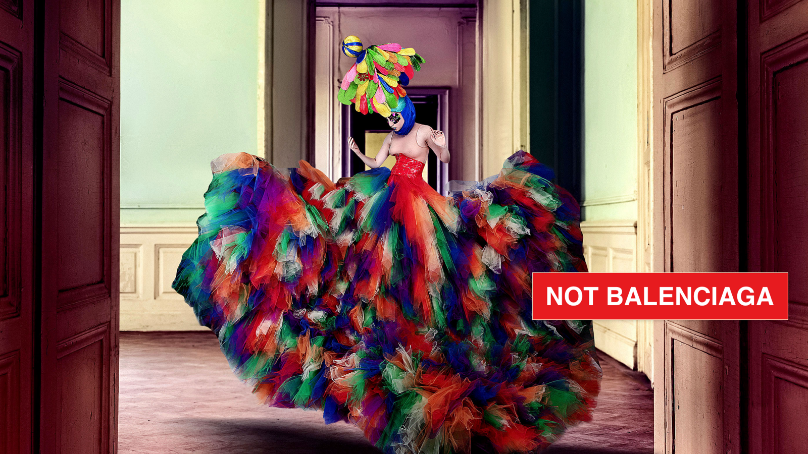
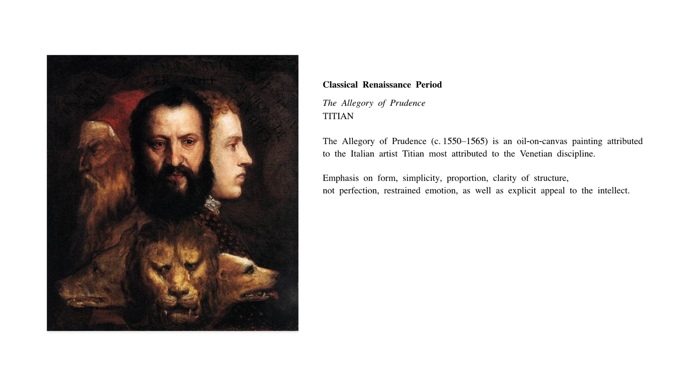
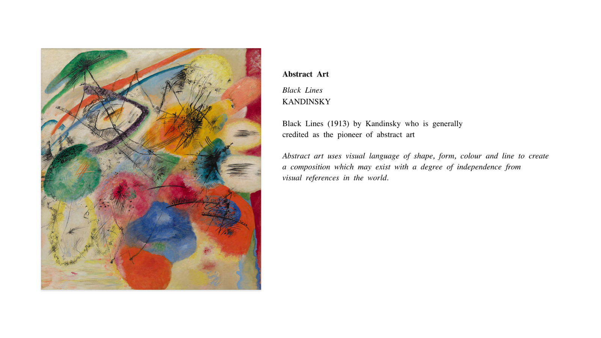

On this page
All design requires art, but not all art is design. This lecture is about the difference, and why, as a UX designer, you work for the many, not the few.

We work for H&M, not Balenciaga

A couture gown can be breathtaking, impractical and made for one person. A high-street shirt has to fit millions of different bodies, survive the wash and sell at a price people can pay.

UX design is the high street. Your work has to make sense to people who are not you, who are in a hurry, and who will never read your design rationale. That means choosing clarity over self-expression, and evidence over taste.
Two traditions: Classicism and Romanticism
Art history gives us a useful way to see the difference.

Classicism draws on ancient Greek and Roman principles: form, simplicity, proportion, clarity of structure and restrained emotion, with an appeal to the intellect.

It values recognised standards of form and craftsmanship, and it shares with design thinking a preoccupation with structure and strategy.

Romanticism, and later abstract art, puts emotion, imagination and the individual first. Kandinsky's abstract work uses shape, colour and line almost independently of the visible world.

Both are valuable. But a design system, a checkout or a hospital app needs the discipline of the first more than the freedom of the second.
Critical thinking over artistry

In practice, that means choosing:
- Substance over style
- Critical thinking over assumptions and "experience"
- The many over the few
- Universal needs over individual taste
- Form that follows function: still beautiful, but never decadent

Tolkien preferred applicability, which lives in the freedom of the reader, to allegory, which lives in the purposed domination of the author. Good UX works the same way: the user, not the designer, decides what the product means to them.
Why it matters for UX
Great visual craft matters, but a UX designer's first job is to solve a problem for many people, not to express a personal style. Thinking critically, backing decisions with evidence and designing for the many is what makes your work useful, and it's what employers hire UX designers for.
Try it: H&M or Balenciaga? (15 minutes)
- Find two apps or websites in the same category, one that feels "artistic" and one that feels "high street" (for example, a fashion label's site and a big retailer's).
- Try the same task on both, such as finding a product and adding it to the basket.
- List where the artistic one put expression before usability, and where the high-street one put usability before expression.
- Decide which approach suits your current project, and write one sentence on why.
Media
Resources
Key takeaways
- All design requires art, but not all art is design.
- UX designers design for the many: clarity and evidence come before personal style.
- Think critically: substance over style, form following function, beautiful but not decadent.